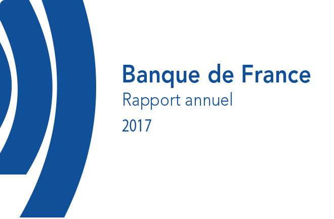
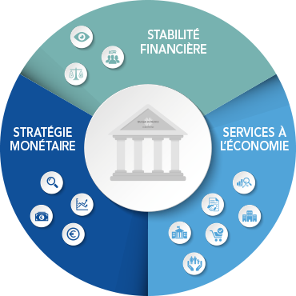
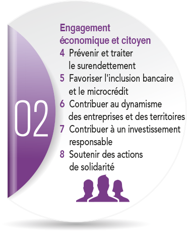
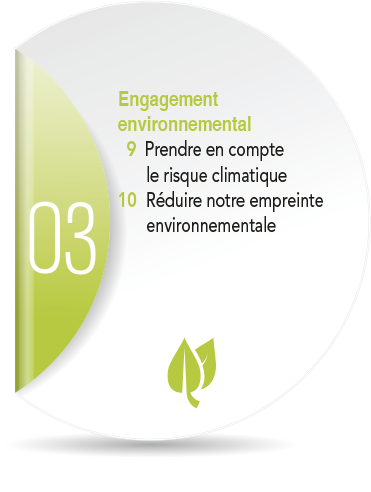

salariés (équivalent temps plein)
Les missions de la Banque de France
La Banque de France s’engage sur ses trois missions pour être en Europe la banque centrale des marchés, le superviseur de référence et un acteur majeur du fiduciaire et en France un service public de confiance et d’excellence
responsabilité sociale d'entreprise
Découvrez les 4 engagements de la Banque de France
1
Engagement
éducatif & culturel
2

Engagement
économique & citoyen
3
Engagement
environnemental
4
Engagement vis-à-vis
des collaborateurs

AnnexesRetrouver l’ensemble des annexes
L’avant-proposdu gouverneur
Au cœur de l’Europe, au service des Français
2017 a été une année de retournement : au-delà de l’incertitude entourant la nouvelle administration américaine et le Brexit, l’économie européenne et française a heureusement accéléré son expansion. La confiance revenue ne doit pas pour autant relâcher notre vigilance. La responsabilité de la Banque de France a été forte pour veiller sur les facteurs de risques qui demeurent ou se développent, soutenir l’économie française et ses réformes, et maintenir au plus haut la confiance dans l’euro. Vous trouverez dans ce Rapport annuel 2017 les résultats atteints par la Banque de France sur ses missions de Stratégie monétaire, de Stabilité financière et de Services à l’économie. Dans un monde volatil, l’indépendance de la Banque de France est une garantie pour tous nos concitoyens ; celle que, soucieux du long terme, nous nous dédions à nos objectifs : la stabilité des prix et donc la solidité de la monnaie ; la stabilité financière et donc le bon financement de l’économie. Mais cette indépendance entraîne une exigence : que nous rendions compte de nosrésultats. Quand la Banque de France contribue activement par la politique monétaire aux 280 000 créations nettes d’emploi de 2017 ; quand elle joue avec l’ACPR un rééle décisif sur l’accord de Bâle III en décembre pour une réglementation bancaire plus stable et sûre ; quand elle crée avec succès le portail « Mes questions d’argent » : oui, elle est bien au coeur de l’Europe et au service des Français.
De ces résultats, je veux avant tout rendre hommage aux femmes et aux hommes de la Banque de France, aux 11 000 agents qui par leur professionnalisme ont servi notre pays et jouent un rôle décisif dans l’Eurosystème. Ils illustrent ces pages et leur implication doit d’autant plus être saluée que nous avons collectivement engagé une transformation ambitieuse. Nous avons pris trois engagements : le premier est d’être en Europe la banque centrale des marchés, le superviseur de référence et un acteur majeur du fiduciaire ; le deuxième est d’être en France un service public de confiance et d’excellence ; et le troisième, pour les managers et tous les agents, c’est une vie au travail modernisée et simplifiée.
Nous sommes aujourd’hui à mi-chemin de notre plan stratégique Ambitions 2020, qui vise à améliorer nos services tout en maîtrisant nos dépenses – elles sont en 2017 inférieures de 50 millions d’euros à 2015 : cet effort est notre contribution à la collectivité nationale. Nous construisons une Banque de France plus performante, plus innovante, plus visible et plus ouverte. Elle est forte de ses 218 ans d’histoire, mais elle veut être au coeur du xxie siècle. Pour cela, nous fluidifions notre organisation, amplifions les innovations technologiques, modernisons notre réseau d’implantations, et nous ouvrons davantage sur l’extérieur.
Une Banque de France mieux connue des Français est aussi une Banque de France plus proche d’eux, y compris de ceux qui en ont le plus besoin. La Banque de France entend rester attractive pour les femmes et les hommes qui y travaillent, favoriser les qualifications (avec la création de l’Université Banque de France) et l’évolution professionnelle. Elle réaffirme aussi sa responsabilité sociale d’entreprise au travers d’actions de solidarité et de mécénat.
Ce double effort, sur nos missions quotidiennes comme sur notre transformation dans la durée, est exigeant. Ses fruits ont d’autant plus de valeur. Les équipes de la Banque peuvent en être fières ; leur travail mérite la considération et le respect. Je veux enfin citer certains responsables qui ont quitté la Banque de France en 2017. Comme sous-gouverneurs, Robert Ophèle – devenu président de l’AMF fin juillet – et Anne Le Lorier dont le mandat s’est achevé début janvier 2018 ont une part éminente dans ces résultats ; nous avons été heureux des nominations de Denis Beau et Sylvie Goulard qui les ont remplacés. Au sein de notre Conseil général, je remercie Philippe Auberger, Michel Felce et Marianne Laigneau de tout leur engagement, et je souhaite la bienvenue à Jean-Roger Davin, Yannick Guillemaud et Anne‑Laure Delatte. Avec eux, avec toutes ses équipes, la Banque de France est résolument dans l’action en 2018.
François Villeroy de Galhau
Nos trois missions 2017
Repères 2017

Chiffres clés 2017
-
11 021
-
95
succursales
-
6
milliards d’euros, le résultat ordinaire avant impôt (dont 5 milliards reversés à la collectivité – impôts et dividendes)
-
26
conventions conclues avec les académies sur l’éducation économique et financière
-
11320
collégiens/lycéens sensibilisés aux questions économiques, budgétaires et financières
-
176,1
tonnes de pièces collectées et triées pour l’opération Pièces jaunes 2017
-
2142
entrepreneurs accompagnés par les correspondants TPE
-
--1,1%
la baisse des émissions de gaz à effet de serre liées aux énergies
Service à l’Économie en 2017
-
62300
droits au compte exercés auprès des établissements de crédit
-
179481
dossiers définitivement traités par les commissions de surendettement en 2017 en France métropolitaine
-
370 000
appels traités par la plateforme téléphonique Assurance Banque Épargne Info Service (ABE IS)
-
15 000
entreprises ayant répondu aux enquêtes de conjoncture
-
100000
abonnés aux enquétes de conjoncture régionales et nationales
-
>35000
séries statistiques diffusées sur webstat.banque-france.fr
-
7.6
millions d’entreprises recensées dans la base FIBEN (14 millions de consultations)
-
261516
entreprises non financières (essentiellement des PME) bénéficiaires d’une cotation
-
909
entreprises confortées dans leur activité (11 172 emplois préservés ou confortés) par la médiation du crédit
Missions du Service à l’Économie
-
Le service économique rendu aux particuliers vise en premier lieu à assurer la protection des consommateurs :
- contrôle des pratiques commerciales
- le site Assurance Banque épargne Info Service (ABE IS)
-
La loi a confié à la Banque de France plusieurs missions qui visent à prévenir les situations de surendettement ou à favoriser l’inclusion bancaire :
- droit au compte
- inclusion bancaire et financière
-
 Le secrétariat des commissions départementales de surendettement, une des tâches les plus importantes effectuées par le réseau de succursales :
Le secrétariat des commissions départementales de surendettement, une des tâches les plus importantes effectuées par le réseau de succursales :- apporter des solutions aux surendettés
- enquête typologique du surendettement
-
Les enquêtes de conjoncture et les statistiques, un diagnostic détaillé sur la situation économique :
- enquêtes nationales
- enquêtes régionales
- Stat Info
-
L’expertise sur les entreprises non financières permet aux équipes de mener des valuations rigoureuses :
- suivi du financement
- cotation
- accompagnement des TPE
- médiation du crédit
-
La Banque de France est également le banquier de l’État :
- tenue du compte du Trésor
- gestion des adjudications de titres émis par l’État
Temps forts en 2017
janvier
Lancement de « Mes questions d’argent », le nouveau portail pour l’Éducation économique, budgétaire et financière opéré par la Banque de France
mars
Ouverture par la Banque de France du service OPALE (outil de positionnement et d’analyse en ligne des entreprises)
juin
Parution du rapport de l’Observatoire de l’inclusion bancaire À l’occasion de la 3e Journée européenne de la microfinance, la Banque de France organise à Paris-La Défense les Rencontres européennes et régionales du microcrédit
Octobre
Signature de la convention de partenariat sur l’éducation financière des élèves du primaire et du collège entre la Banque de France, le ministère de l’Éducation nationale et l’Institut pour l’éducation financière du public 1er bilan du dispositif des correspondants TPE un an après son lancement (2 129 dirigeants accompagnés, 88 % de satisfaits)
novembre
Journées de l’économie à Lyon avec de nombreux intervenants de la Banque de France
Stabilité Financière en 2017
-
185
missions de contrôle sur place des assurances, des banques (hors MSU), et des pratiques commerciales
-
48
missions de contrôle pour le compte de la BCE (cadre du Mécanisme de surveillance unique – MSU)
-
1 027
milliards d’euros, le montant des réserves brutes de change (133 milliards pour les réserves nettes)
-
138
personnes détachées à la BCEdans le cadre du MSU
-
737
établissements bancaires agréés
-
742
tonnes, le stock d’or de la France (4e au monde)
-
13.6%
le ratio de solvabilité (core tier one) des six principaux groupes bancaires français
-
23
milliards de coupures délivrées aux guichets
-
291
milliards d’euros, moyenne quotidienne des flux traités par Target2 (paiements de montant élevé) en France en décembre 2017
Missions de la Stabilité financière
-
L’Autorité de contrôle prudentiel et de résolution (ACPR) supervise le secteur financier :
- agrément et contrôle des banques et des assurances
- acteur de la supervision unique européenne
- contribution aux travaux internationaux et mise en oeuvre des évolutions réglementaires
- lutte contre le blanchiment des capitaux et le financement du terrorisme
- information et protection des épargnants
-
La Banque de France veille au bon fonctionnement des infrastructures de paiement et de marché dont elle assure la surveillance.
- mise en oeuvre des normes européennes et internationales
- suivi de la gestion des risques de crédit et de liquidité
-
La Banque de France agit pour garantir la stabilité financiПre et prévenir les risques systémiques :
- analyse des risques systémiques et vulnérabilités du systéme financier français
- contribution aux travaux des comités internationaux sur les risques systémiques et le cadre macroprudentiel
- coordination avec le Haut Comié de stabilité financière (HCSF)
- conduite de tests de robustesse et d’exercices de gestion de crise
Temps forts en 2017
Avril
Parution de la Revue de la stabilité financière de la Banque de France consacrée à « L’impact des réformes financières »
septembre
Première Matinée Fintech organisée par l’ACPR et dédiée aux démarches d’agrément dans le secteur des paiements
novembre
Création d’un régime de résolution dans l’assurance Réussite du test de crise opérationnelle majeure mené par le groupe de Place Robustesse
décembre
Accord finalisant Bâle III
Création d’un réseau de banques centrales et de superviseurs de 8 pays mobilisés pour le verdissement du système financier (annoncée lors du One Planet Summit à Paris) Parution de l’Évaluation des risques du système financier français pointant la nécessité de surveiller le niveau d’endettement des agents non financiers en France, et annonce par le HCSF d'un projet de mesure macroprudentielle visant à limiter l’exposition des banques systèmiques aux grandes entreprises les plus endettées
Notre responsabilité sociale d’entreprise : quatre engagements et douze actions prioritaires


Après avoir renforcé fin 2016 sa démarche RSE en l’intégrant dans son plan stratégique Ambitions 2020, comme « un objectif réaffirmé au service de la société », l’annОe 2017 a été pour la Banque de France celle du déploiement de sa stratégie RSE, à travers ses quatre engagements et douze actions prioritaires. En cohérence avec ses valeurs, sa stratégie RSE et afin de soutenir la transition énergétique et écologique, la Banque de France a inscrit au sein de son « Engagement économique et citoyen » une nouvelle action prioritaire intitulée « Contribuer à une finance responsable ». Considérant que la prise en compte des questions environnementales, sociales, sociétales et de gouvernance dans sa politique d’investissement, contribue au développement équilibré et soutenable de l’économie et de la société, elle a décidé de formaliser une Charte d’investissement responsable dont les modalités opérationnelles seront déployées en 2018.
Stratégie Monétaire en 2017
-
492,6
milliards d’euros d’achats de titres par la Banque de France depuis le début de la mise en oeuvre des programmes CBPP3, ABSPP, PSPP et CSPP
-
97,7
milliards d’euros d’achats de titres d’entreprises françaises au titre des opérations de politique monétaire (depuis le 8 juin 2016)
-
147
milliards d’euros, le montant des réserves brutes de change (133 milliards pour les réserves nettes)
-
48,6
milliards d’euros, le montant des réserves nettes en devises
-
84.7
milliards d’euros, le montant des réserves en or
-
2 436
tonnes, le stock d’or de la France (4e au monde)
-
1.4
milliard de billets en euros fabriqués et livrés
-
6,4
milliards de coupures délivrées aux guichets
-
730
millions de données individuelles accessibles dans l’Open Data Room
-
39
publications dans des revues à comité de lecture
-
3e
banque centrale de l’Eurosystème en nombre de publications répertoriées
Missions de la Stratégie monétaire
-
Les décisions de politique monétaire se fondent sur un diagnostic économique précis qui mobilise des travaux de recherche de haut niveau :
- expertises, études et modélisation
- diagnostics, analyses et prévisions
- préparation des réunions (BCE, BRI, FMI, G20)
- production et diffusion de données économiques
-
La Banque de France met en oeuvre la politique monétaire pour assurer le financement de l’économie :
- prévisions des besoins de monnaie du secteur bancaire français
- refinancement des banques françaises
- achats de titres dans le cadre de la politique monétaire non conventionnelle de la BCE
-
La Banque de France est un intervenant de premier plan sur les marchés, au titre de ses activités opérationnelles, de sa gestion des infrastructures de marché et des réserves de change :
- opérations de marchés
- pilotage du système de règlement Target2 Securities
-
En tant que membre de l’Eurosystème, la Banque de France préserve la confiance dans la monnaie :
- institut d’émission
- premier imprimeur de billets en euros
- surveillance des moyens de paiement
Temps forts de 2017
Janvier
Conférence Banque de France-Collège de France sur « La stagnation séculaire et la mesure de la croissance ».
Extension aux titres des agences publiques du dispositif d’enchères inversées de la Banque de France
mars
4e et dernière opération de TLTRO II, pour un montant de 234 milliards d’euros Lors d’un sondage national, trois Français sur quatre se déclarent hostiles à une sortie de l’euro
Avril
Lancement du nouveau billet de 50 € (3e billet le plus utilisé en France, après le 20 € et le 10 €)
Juillet
Publication du premier rapport de l’Observatoire de la sécurité des moyens de paiement
Octobre
Décision du Conseil des gouverneurs de réduire de moitié (de 6 à 30 milliards d’euros) les achats nets de titres à partir de janvier 2018